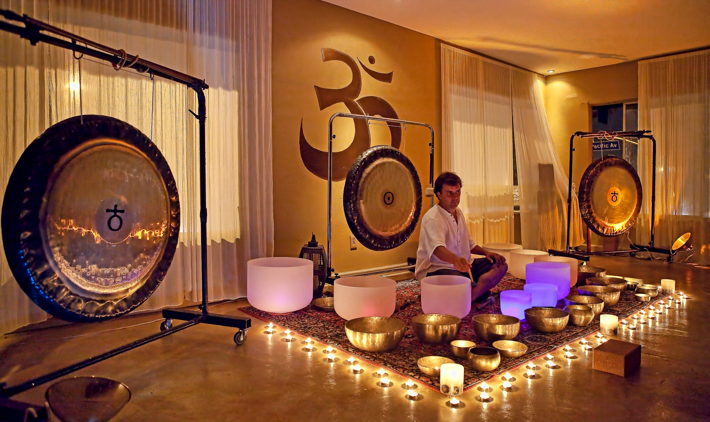

Heal Your Life
Trauma, pain, and suffering can affect a family for generations. The issues we struggle with
in life—including relationships, health, and career—may be inherited from our parents,
grandparents, or even older ancestral lines. Constellations therapy works to energetically
untie the knots that bind us to traumatic family events in the past, so we can move toward an
unburdened future of renewed potential. Bert Hellinger’s constellation philosophy deals with
the connective roots of our lives and exceeds the boundaries of any one therapy or healing
paradigm. The insights about hidden dynamics and intergenerational/ancestral connections
developed by Bert and Sophie Hellinger offer powerful resources that are available to
everyone, in any circumstances. Not only does constellation work reveal the actual sources
of our issues—to offer deep and long-lasting resolutions—but also invites us to restore and
renew our life........
Through interactive and experiential constellations, and large and small group work, we
learn to:
- Address difficult issues on an energetic and soul level.
- Align with the natural, essential rhythms of life.
- Experience ongoing creative movement toward wholeness.
- Unlock negative patterns and open to wellness.
- Discover the emotional, physical, and transcendent freedom that leads to real.
change.......adapted from Hellingers description of FC..Omega USA..workshop”

Family Constellation
The Systemic Constellations approach (or Family Constellations, as it was originally known) was developed in the late
1970s by Bert Hellinger, German psychotherapist, author and philosopher. Now in his eighties, Hellinger continues to
be a leading, if somewhat controversial, voice in psychotherapy internationally. Despite the fact that apparently Hellinger
did not initially publish on Constellation work, intending to keep it away from mainstream psychotherapy and academia,
word about this new approach spread through Europe and the world, and continues to do so. Although it remains little-
known in the psychological community, this new therapeutic approach has already been practised in countries all over the
world.
About the process
Constellation is a form of group therapy where the energies of the group helps to guide and nurture the process for each
individual to explore, understand and resolve their issues.
The participants and facilitator sit in a circle creating a central ‘field’. After a short interview, the client is invited by the
facilitator to select representatives from the group as they relate to their presenting issue and place them intuitively in
positions within the central field. The client then sits and the process begins.
The facilitator follows the guiding force of the ‘Field’ to allow the entanglements to be revealed. Very often, when the
client, takes in this picture of the constellation, insight is created which itself maybe healing. Sometimes, the client may
want to go one step further, and then, the facilitator attempts to guide the constellation towards a resolution. When this
happens there is often a visible relief and relaxation on the part of the representatives and the client.
However, it must be noted that Constellation therapy helps us to work what is, and not what we want it to be.
One can work with the family of the client and then this process is called Family Constellation. When the client works with
abstract concepts, like, Love, Power, Success, Marriage etc it is called Structural Constellation.
The whole purpose of the constellation is to bring the unconscious entanglements to conscious awareness and allow the
field energy to work and realign the client’s consciousness. This may happen immediately for some and for other it may
happen over a longer period of time.
This workshop is for anybody who has unanswered questions in his/her life
which may be related to
- Unrecognized blocks to success, marriage, creativity, harmonious relationships.
- Unresolved prominent relationships e.g. with parent, child or partner.
- Procrastination and unhealthy behavior inconsistent with intentions.
- Persistent money/business problem.
- Unexplained feelings of sadness or anger.
- Feeling ‘stuck’ or ‘weighed down’ in life, not able to be oneself.
- Persistent body symptoms (such as obesity, anorexia, asthma, panic attacks, ulcer colitis, cancer). This work is
complementary to medical care and not a substitute for it: thorough medical assessment and treatment is of
course necessary first
- Finding it difficult to deal with an important life event such as early deaths or separations, exclusion or expulsion
of a family member, major accidents or illnesses, complications during childbirth, adoptions, abortions
- There are patterns that seem resistant to change, there is a persistent sticking point in individual therapy

Heal Your Life
Sound therapists believe that our bodies contain 'energy frequencies' and that sonic frequencies can be used to reattune
these energies when they go off key. All you have to do is lie down and bask in the tuneful beauty of 'pure' sound.
What is it?
Whether it's Mozart or Motown, music affects us all in different ways. But on a fundamental level, music is just organised
sound. Sound therapy deconstructs music into pure sound, harnessing the knowledge that sound can have a powerful
effect on our emotions.
Sound therapists believe that we are all made up of different energy frequencies. They use sound frequencies to interact
with these, thus attempting to rebalance the body's energy.
Before each session, the practitioner will ask the client about their medical history and any current health problems. The
practitioner will then adapt their treatment accordingly, using relaxing or stimulating sounds to try to rebalance the body -
gongs, drums, bells, bowls, tuning forks and the human voice are all used. According to practitioner Lyz Cooper: "Clients
are wrapped up in [these sounds] like a cocoon, and allowed to go on a journey."
Who can do it?
Sound therapy is a complementary medicine designed to work alongside orthodox medicine. BAST attempts to treat
individuals with fertility issues, chronic pain, cancer, stress-related illnesses, IBS, ME, tinnitus, mild depression, anxiety
and arthritis. BAST founder Lyz Cooper believes: "Whether you come for a regular tune-up or relaxation session, or have
a chronic long-term illness, sound could help you to enjoy a better quality of life. Come for a regular tune-up or relaxation
session, or have a chronic long-term illness, sound could help you to enjoy a better quality of life.
What results can you expect?
Sound therapy is said to help not only physical illness, but also help balance the emotions and quieten a busy mind. Most
people feel calm and relaxed following treatment. For some, this feeling will last several days. You may also be given exercises
to practise between treatments.
Access Bar Consciousness
Science claims everything in us & around us is energy, so to change any aspect of our life it is important
to change the energy!
Access Bars works wonderfully on our energies to change different aspects on our life like relationship,
money flow, career, body, health etc.
Access Bars are 32 points on our head that connect to different aspects of your life & when gently
touched all the limitations, blocks, thoughts, ideas, attitudes, decisions, beliefs, feeling, emotions,
patterns, point of view stored are released easily & effortlessly.
Recently it has been proved 1 hour of bars session is equal to 20 years of meditation.
As a healer, after using Access Bars in my practice & with every successive session I witnessed dramatic
shifts in our & client’s life. It worked wonderfully on Health Issue, Weight Issues, Relationships Issues,
Sleep Issues, Personality, Peace, Anxiety, Stress, Addictions, Depression, Pain, Mental Disorders,
Marriages, Finances Issues, Business, Career, Dyslexia, ADD, ADHD and much more.
As an Access Consciousness Bars Facilitator you are certified to:
- Facilitate introductory talks on Access Bars®
- Teach the full Access Bars® Class
- Offer private sessions as a practitioner
- Host Access Bars® swaps
- Facilitate introductory classes based on various Access Consciousness books
The Benefits
As there are Bars for every aspect of your life do you think it's possible that you could clear limitations in
any aspect of your life?
Would you like to clear any limitations relating to healing, body, control, awareness, creativity, hopes and
dreams, sadness and joy, power, ageing, sex and money?
Having your Bars run can have so many profound effects, including (but not limited to):
- Reduced stress and worry
- Reduced mind chatter
- Increased energy
- Elimination of aches, pains and stiffness in the body
- Improved sleep
- Elimination of insomnia
- Getting out of depression
- Helps with Autism, ADD & ADHD
- Decreased ageing
- And it can even help you lose weight!
Hypnotherapy
Hypnotherapists trained by us in association with EKAA can work with depression, asthma, psoriasis,
eczema, allergies, migraine, de addiction, relationship issues , fears phobias, pain management,
weight management , eating disorders, dandruff, pimples, acne, back pain, joint pain, arthritis, nail
bitting, laziness, hairfall, PCOD, breathing problem, insomnia, accident and surgical trauma, etc...
Hypnotherapy further leads to past life regression therapy for karma understanding, spiritual
guidance, releasing oaths, vows and curses.
Hypnotherapists can also help students to get rid of exam fear and anxiety, improve focus,
concentration and performance...